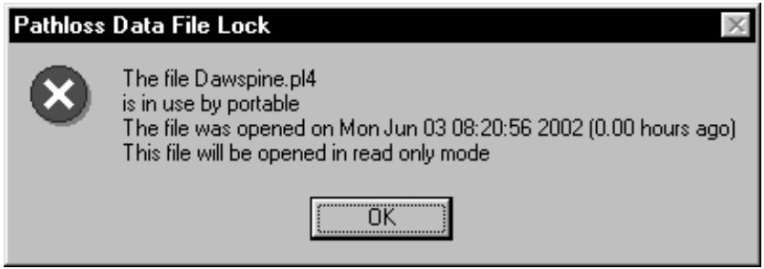
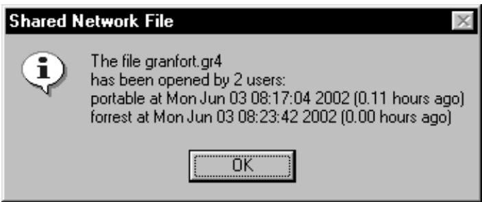
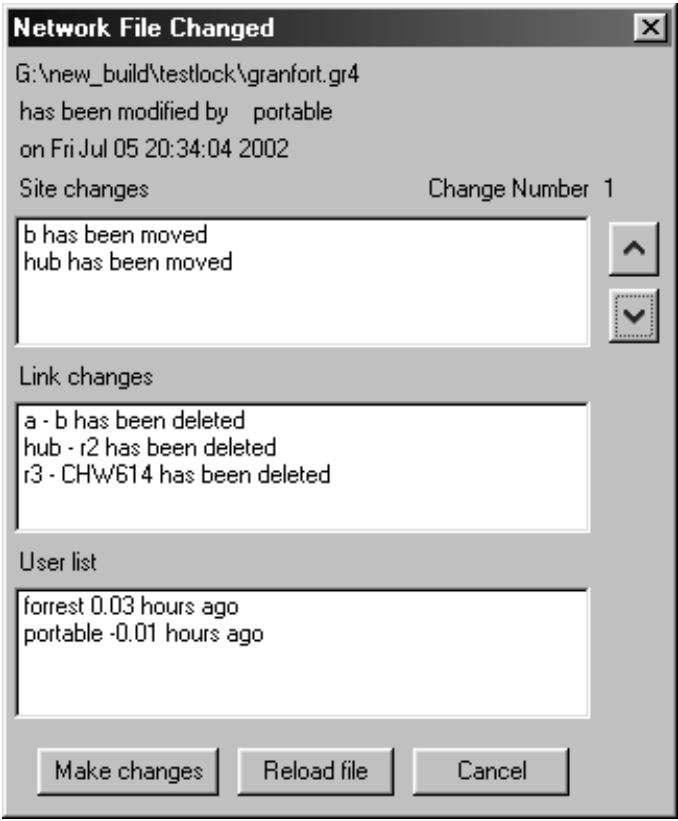

#2 textBản dựng chương trình Pathloss ngày 03 tháng 6 năm 2002 giới thiệu tính năng khóa tệp dữ liệu Pathloss (pl4) và chia sẻ tệp mạng (gr4) khi các tệp này nằm trên một ổ đĩa mạng dùng chung. Tính năng khóa và chia sẻ được kích hoạt nếu ổ đĩa gốc chứa tệp dữ liệu mạng hoặc Pathloss là một ổ đĩa từ xa. Lưu ý rằng điều này có thể thất bại trên mạng ngang hàng nếu một ổ đĩa được truy cập như một ổ đĩa cục bộ.
#3 titleKhóa tệp dữ liệu Pathloss (pl4)
#4 textCơ chế khóa tạo một tệp mới có cùng tên với tệp dữ liệu Pathloss với phần mở rộng lck. Khi người dùng đóng tệp này, tệp khóa sẽ bị xóa. Nếu người dùng khác cố gắng mở tệp, một lời nhắc sẽ được đưa ra rằng tệp đang được sử dụng và sẽ được mở ở chế độ chỉ đọc. Không thể lưu tệp dưới một tên khác. Chương trình không kiểm tra xem tệp khóa đã bị xóa chưa.
#5 image

#6 titleChia sẻ tệp mạng (gr4)
#7 textĐể kích hoạt chia sẻ tệp mạng (gr4), chọn Tệp - Hoạt động tệp dùng chung trên thanh menu mạng. Bước này phải được thực hiện trước khi tải một tệp mạng. Để kích hoạt chia sẻ tệp mạng sau khi tệp đã được tải, chọn Tệp - Mới và sau đó chọn Tệp - Hoạt động tệp dùng chung. Sau đó tải lại tệp. Cài đặt chia sẻ được lưu trong tệp tùy chọn chương trình.
#8 textỞ chế độ này, một tệp không thể được lưu nếu các điều kiện sau không được đáp ứng.
#9 list
Mỗi trạm phải có một dấu hiệu gọi duy nhất. Đây là một mã định danh gồm 15 ký tự và không thể để trống. Cùng một dấu hiệu gọi không thể được sử dụng tại các trạm khác nhau. Dấu hiệu gọi đóng vai trò như một mã định danh duy nhất để xác định các thay đổi đối với các trạm và liên kết.
Ngày sửa đổi của tệp trên đĩa phải giống với tệp trong bộ nhớ. Các thay đổi của người dùng khác không thể bị ghi đè.
#10 textCơ chế chia sẻ sử dụng một tệp có cùng tên với tệp mạng với phần mở rộng glk. Tệp này sẽ được gọi là tệp glk trong các mô tả sau và tệp chứa các thông tin sau:
#11 list
ngày sửa đổi và số thay đổi
danh sách tất cả người dùng đã mở tệp mạng
một loạt các bản ghi chứa các thay đổi được thực hiện đối với tệp. Các bản ghi này được sử dụng để cập nhật các tệp của từng người dùng
#12 textTệp glk được tạo khi người dùng đầu tiên mở tệp mạng. Tại thời điểm này, tệp chứa tên của người dùng và ngày sửa đổi. Số thay đổi được đặt thành không. Chương trình sau đó sẽ bắt đầu giám sát tệp glk trong khoảng thời gian 30 giây để xác định xem ngày sửa đổi có thay đổi hay không.
#13 textTệp glk bị xóa khi người dùng cuối cùng đóng tệp mạng.
#14 textKhi tệp mạng đã được mở bởi người dùng đầu tiên, tất cả người dùng khác mở tệp sẽ được hiển thị danh sách những người dùng đã mở tệp. Người dùng mới được thêm vào danh sách người dùng và nhận ngày sửa đổi tại thời điểm họ tải tệp.
#15 image

#16 textGiả sử một người dùng thực hiện một số thay đổi đối với tệp và lưu các thay đổi. Một thay đổi được định nghĩa như sau:
#17 list
một trạm đã được thêm
một trạm đã bị xóa
một trạm đã được di chuyển
một liên kết đã được thêm
một liên kết đã bị xóa
tệp Pathloss liên kết với liên kết đã được thay đổi.
#18 image

#19 textKhi tệp được lưu, một bản ghi các thay đổi trước tiên được tạo bằng cách so sánh tệp trong bộ nhớ với tệp trên đĩa. Tệp glk sẽ được cập nhật với ngày sửa đổi mới và bản ghi các thay đổi sẽ được thêm vào tệp.
#20 textTrong môi trường chia sẻ này, chương trình kiểm tra tệp glk mỗi 30 giây và nếu có thay đổi xảy ra, người dùng sẽ được thông báo với danh sách các thay đổi. Mỗi thay đổi có thể được xem.
#21 titleThực hiện thay đổi
#22 textCác thay đổi được thực hiện trực tiếp từ tệp glk. Màn hình sẽ không được định dạng lại. Tất cả các thay đổi trong tệp glk sẽ được thực hiện.
#23 titleTải lại tệp
#24 textToàn bộ tệp sẽ được tải lại và màn hình sẽ được định dạng lại. Tùy chọn tải lại tệp chỉ khả dụng trong các mô-đun mạng và mapgrid.
#25 textNếu nút hủy được nhấp, người dùng có thể cập nhật tệp bằng cách quay lại mô-đun mạng hoặc mapgrid và tải lại tệp bằng cách sử dụng Tệp - Mở hoặc chọn Tệp - Trạng thái tệp dùng chung. Tùy chọn sau tạo ra cùng một màn hình và tùy chọn như một thông báo thay đổi trong các mô-đun mạng hoặc mapgrid.
#26 textChỉ một thông báo thay đổi được đưa ra ngay cả khi người dùng quyết định không tải lại tệp. Khi tệp đã được cập nhật, thông báo thay đổi sẽ bắt đầu lại.
#27 titleTính toán nhiễu trên một tệp mạng dùng chung
#28 textCác lược đồ khóa bảng vốn có trong công cụ cơ sở dữ liệu Borland không cho phép người dùng thực hiện các tính toán nhiễu đồng thời. Một tính toán nhiễu tạo ra một tập hợp các bảng liên quan đến tệp gr4 mạng.
#29 image
#30 textBản dựng chương trình ngày 02 tháng 6 năm 2002 cho phép người dùng chỉ định một thư mục riêng tư cho các tính toán nhiễu. Việc lựa chọn được thực hiện khi bắt đầu một tính toán nhiễu.
#31 textCác thao tác như chỉ định tương quan fading sẽ thất bại nếu tệp mạng hiện tại không khớp với các bảng cơ sở dữ liệu trong thư mục riêng tư.